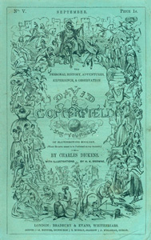

The story follows the life of David Copperfield from childhood to maturity. David was born in Blunderstone, Suffolk, England, six months after the death of his father. David spends his early years in relative happiness with his loving, childish mother and their kindly housekeeper, Clara Peggotty. When he is seven years old his mother marries Edward Murdstone. During the marriage, partly to get him out of the way and partly because he strongly objects to the whole proceeding, David is sent to lodge with Peggotty's family in Yarmouth. Her brother, fisherman Mr Peggotty, lives in a house built in an upturned boat on the beach, with his adopted relatives Emily and Ham, and an elderly widow, Mrs Gummidge. "Little Em'ly" is somewhat spoiled by her fond foster father, and David is in love with her.
On his return, David is given good reason to dislike his stepfather and has similar feelings for Murdstone's sister Jane, who moves into the house soon afterwards. Between them they tyrannize his poor mother, making her and David's lives miserable, and when, in consequence, David falls behind in his studies, Murdstone attempts to thrash him - partly to further pain his mother. David bites him and soon afterwards is sent away to a boarding school, Salem House, under a ruthless headmaster, Mr Creakle. There he befriends an older boy, James Steerforth, and Tommy Traddles. He develops an impassioned admiration for Steerforth, perceiving him as something noble, who could do great things if he would.
David goes home for the holidays to learn that his mother has given birth to a baby boy. Shortly after David returns to Salem House, his mother and her baby die, and David returns home immediately. Peggotty marries the local carrier, Mr Barkis. Murdstone sends David to work for a wine merchant in London - a business of which Murdstone is a joint owner. David's landlord, Wilkins Micawber, is arrested for debt and sent to the King's Bench Prison, where he remains for several months, before being released and moving to Plymouth. No one remains to care for David in London, so he decides to run away.
He walks from London to Dover, to his only relative, his eccentric yet kind-hearted great-aunt Betsey Trotwood. She had come to Blunderstone at his birth, only to depart upon learning that he was not a girl. However, she takes pity on him and agrees to raise him, despite Murdstone's attempt to regain custody of David, on condition that he always try to 'be as like his sister, Betsey Trotwood' as he can be, meaning that he is to endeavour to emulate the prospective namesake she was disappointed of. David's great-aunt renames him "Trotwood Copperfield" and addresses him as "Trot", and it becomes one of several names which David is called by in the course of the novel.
David's aunt sends him to a far better school than the last he attended. It is run by Dr Strong, whose methods inculcate honour and self-reliance in his pupils. During term, David lodges with the lawyer Mr Wickfield, and his daughter Agnes, who becomes David's friend and confidante. Wickfield has a secretary, the 15-year-old Uriah Heep.
By devious means, Uriah Heep gradually gains a complete ascendancy over the aging and alcoholic Wickfield, to Agnes's great sorrow. Heep hopes, and maliciously confides to David, that he aspires to marry Agnes. Ultimately with the aid of Micawber, who has been employed by Heep as a secretary, his fraudulent behaviour is revealed. At the end of the book, David encounters him in prison, convicted of attempting to defraud the Bank of England.
After completing school, David apprentices to be a proctor. During this time, due to Heep's fraudulent activities, his aunt's fortune has gone down. David begins to struggle for his life. He works mornings and evenings for his former teacher Doctor Strong as a secretary, and also starts to learn shorthand, with the help of his former school-friend Traddles, upon completion reporting parliamentary debate for a newspaper. With considerable moral support from Agnes and his own great diligence and hard work, David ultimately finds fame and fortune as an author, writing fiction.
David's romantic but self-serving school friend, Steerforth, seduces and dishonours Emily, offering to marry her off to one of his servants before finally deserting her. Her uncle Mr Peggotty manages to find her with the help of London prostitute Martha, who had grown up in their county. Ham, who had been engaged to marry Emily before the tragedy, dies in a storm off the coast in attempting to succour a ship; Steerforth was aboard the same and also died. Mr Peggotty takes Emily to a new life in Australia, accompanied by Mrs Gummidge and the Micawbers, where all eventually find security and happiness.
David marries the beautiful but childish Dora Spenlow, but their marriage proves unhappy for David. Dora dies early in their marriage after a miscarriage. After Dora's death, Agnes encourages David to return to normal life and his profession of writing. While living in Switzerland, David realises that he loves Agnes. Upon returning to England, after a failed attempt to conceal his feelings, David finds that Agnes loves him too. They quickly marry and in this marriage, he finds true happiness. David and Agnes then have at least five children, including a daughter named after his great-aunt, Betsey Trotwood.
1911 - David Copperfield, silent film directed by Theodore Marston.
1913 - David Copperfield, silent film directed by Thomas Bentley.
1922 - David Copperfield, a Danish silent film directed by A. W. Sandberg.
1935 - David Copperfield, a film directed by George Cukor, featuring W.C. Fields, Freddie Bartholomew, Lionel Barrymore, Madge Evans and Maureen O'Sullivan. Originally it was to have starred Charles Laughton as Mr. Micawber but, after two days of work, he disliked his performance in the dailies and asked to be replaced.
1947 - David Copperfield, a radio broadcast as part of the Favorite Story series, hosted by Ronald Colman.
1950 - David Copperfield, a radio broadcast as part of the Theater Guild on the Air broadcast on 24 December 1950 with Richard Burton, Boris Karloff, Flora Robson and Cyril Ritchard.
1956 - David Copperfield, a 13-part BBC TV serial directed by Stuart Burge and starring Robert Hardy, Sonia Dresdel and Bernard Cribbins.
1966 - David Copperfield, a 13-part TV serial directed by Joan Craft and starring Ian McKellen, Flora Robson and Gordon Gostelow. Only four of the thirteen episodes are known to still exist.
1969 - David Copperfield, a film directed by Delbert Mann and starring Ralph Richardson, Richard Attenborough, Laurence Olivier, Susan Hampshire, Cyril Cusack, Wendy Hiller, Edith Evans, Michael Redgrave and Ron Moody.
1974 - David Copperfield, a 6-part TV serial, also directed by Joan Craft and, this time, starring David Yelland, Martin Jarvis, Arthur Lowe and Patricia Routledge.
1983 - David Copperfield, an animated film by Burbank Films Australia.
1986 - David Copperfield, a 10-part TV serial directed by Barry Letts, shown on BBC, starring Simon Callow, Brenda Bruce and Nyree Dawn Porter.
1991 - The Personal History of David Copperfield, a ten-part radio series on BBC Radio 4 with Gary Cady (David Copperfield), Miriam Margolyes, John Moffatt, Timothy Spall and Sheila Hancock
1993 - David Copperfield, animated, anthropomorhic animal TV film, directed by Don Arioli and featuring the voices of Sheena Easton, Julian Lennon, Howie Mandel, Andrea Martin, Kelly Le Brock and Michael York. Shown on NBC.
1999 - David Copperfield, a 2-part TV serial shown on BBC starring Bob Hoskins, Maggie Smith, Zoë Wanamaker, Imelda Staunton, Ian McKellen and a very young Daniel Radcliffe.
2000 - David Copperfield, a film directed by Peter Medak, filmed in Ireland, and starring Sally Field, Paul Bettany, Eileen Atkins and Anthony Andrews.
2019 - The Personal History of David Copperfield, a film directed by Armando Iannucci starring Dev Patel, Tilda Swinton, Peter Capaldi and Ben Whishaw.